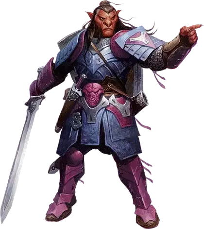

Хобгоблин
Hobgoblin

Хобгоблины ведут свою родословную от древних дворов Страны Фей, где они впервые появились со своими родственниками-гоблинами и багбирами. Многие из них были изгнаны из Страны Фей богом-завоевателем Маглубиетом, который сделал их своими солдатами, но Страна Фей оставила свой след; где бы они ни находились в мультивселенной, они продолжают нести в себе частицу взаимопомощи Страны Фей, которая создаёт мистическую связь между дарующим и получающим этот дар.
В некоторых мирах такие связи приводят к тому, что хобгоблины образуют сообщества с глубокими связями друг с другом. В Эберроне и Забытых Королевствах появились огромные легионы хобгоблинов с рядами преданных солдат, прославившихся своим единством.
Хобгоблины, как правило, выше своих собратьев-гоблинов, но не такие большие, как багбиры. У них изогнутые, заостренные уши и носы, которые становятся ярко-красными или синими во время проявления эмоций.
Особенности Хобгоблина
Вы обладаете следующими особенностями.
Увеличение характеристик. Либо значение одной характеристики по вашему выбору увеличивается на 2, а другой — на 1, либо значение трёх различных характеристик по вашему выбору увеличивается на 1.
Скорость. Ваша базовая скорость ходьбы — 30 футов.
Вид существа. Вы — Гуманоид. Вы также считаетесь гоблином для любого необходимого условия или эффекта, который требует, чтобы вы были гоблином.
Размер. Ваш размер — Средний.
Тёмное зрение. На расстоянии 60 футов вы при тусклом освещении можете видеть так, как будто это яркое освещение, и в темноте так, как будто это тусклое освещение. В темноте вы не можете различать цвета, только оттенки серого.
Наследие фей. Вы с преимуществом совершаете спасброски для того чтобы избежать или окончить на себе состояние очарован.
Дар фей. Вы можете использовать эту особенность, чтобы бонусным действием совершить действие Помощь. Вы можете использовать эту особенность количество раз, равное вашему бонусу мастерства. Вы восстанавливаете все потраченные использования по окончании продолжительного отдыха.
Начиная с 3-го уровня, выбирайте один из приведенных ниже вариантов каждый раз, когда вы совершаете действие Помощь этой особенностью:
- Радушие. Вы и существо, которому вы помогаете, получаете количество временных хитов, равное 1к6 + ваш бонус мастерства.
- Проход. У вас и существа, которому вы помогаете, увеличиваете скорость ходьбы на 10 футов до начала вашего следующего хода.
- Злость. До начала вашего следующего хода, когда атака существа, которому вы помогаете, впервые попадает по цели броском атаки, эта цель получает помеху на следующий бросок атаки, который она совершает в течение следующей минуты.
Удача множества. Если вы провалили бросок атаки, проверку характеристики или спасбросок, вы можете использовать свои узы взаимопомощи, чтобы получить бонус к броску, равный числу союзников, которых вы можете видеть в пределах 30 футов от вас (максимальный бонус — +3). Вы можете использовать эту особенность количество раз, равное вашему бонусу мастерства. Вы восстанавливаете все потраченные использования по окончании продолжительного отдыха.
Языки. Ваш персонаж может говорить, читать и писать на Общем и ещё одном языке, который по вашему мнению подходит для персонажа.